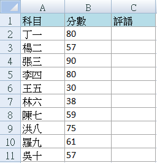
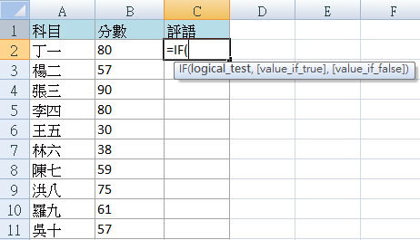
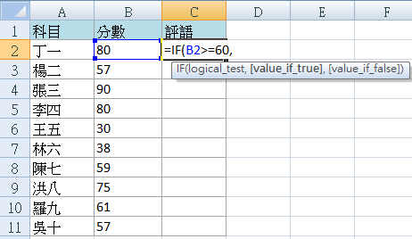
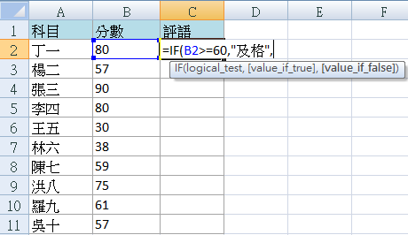
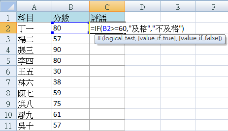
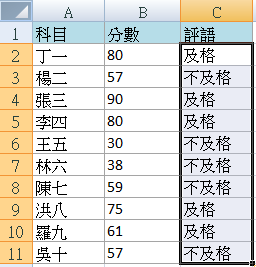
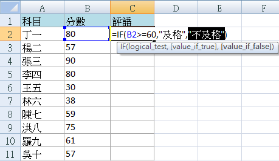
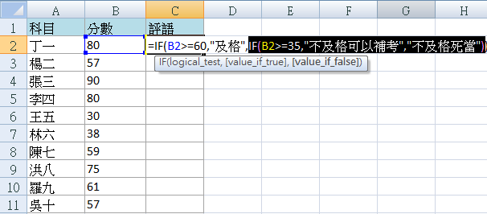
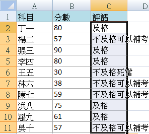

豪拜兒|Excel 教程：學習如何使用 IF 函數進行條件判斷，提升數據處理能力的實用指南

在現代的辦公環境中，Excel已經成為一個不可或缺的工具，特別是在處理和分析大量數據時。IF函數作為Excel中的一個核心功能之一，不僅可以根據特定的條件進行邏輯判斷，還能根據判斷結果返回不同的值或執行不同的操作。這使得它在各種應用場景中都表現出色，無論是在財務分析、數據報表製作、還是在日常的數據整理和處理中。
IF函數的靈活性和多功能性使得用戶可以根據具體需求設定各種不同的條件判斷，從而自動化地處理數據，減少手動操作的時間和錯誤的風險。掌握IF函數的使用不僅能夠提高工作效率，還能確保數據的準確性和一致性，這對於任何需要依賴Excel進行數據分析和報告的專業人士來說都是至關重要的技能。
在本文中，我們將深入探討IF函數的基本語法和應用技巧，幫助你理解如何有效地利用這個強大的函數來處理你的數據工作。無論你是新手還是有一定經驗的Excel使用者，這些知識都將為你提供實用而實際的解決方案。讓我們開始吧，深入了解如何在Excel中使用IF函數來進行條件判斷和數據處理！
範例：利用IF函數對成績判定及格與不及格
步驟一、定義評語判定標準
定義大於等於60分為及格，小於60分為不及格

步驟二、使用IF函數
選擇評語欄（假設在C列），輸入以下IF函數：
=IF(B2>=60, "及格", "不及格")
- IF函數

B2是期中考分數位置。如果B2中的成績大於或等於60，則顯示"及格"；否則顯示"不及格"。
- 如果B2中的成績大於或等於60

- 顯示"及格"

- 否則顯示"不及格"

步驟三、填充下方儲存格
使用Excel的自動填充功能將IF函數應用到下方的儲存格中，以快速生成所有學生的評語。

巢狀IF函數
步驟一、使用巢狀IF函數進行更細分的條件判斷
IF函數也可以巢狀使用，來更細化地判斷不同的條件。例如，對於不及格的學生可以進一步判斷是否能參加補考。
=IF(B2>=60, "及格", IF(B2>=35, "不及格可以補考", "不及格死當"))
在這個例子中，如果成績大於等於60分，顯示"及格"；如果成績介於35到59分之間，顯示"不及格可以補考"；否則顯示"不及格死當"。
- 成績大於等於60分，顯示"及格"，再將剛剛標示為"不及格"的位置替換成一組新的IF函數

- 如果成績介於35到59分之間，顯示"不及格可以補考"，否則顯示"不及格死當"

步驟二、完成
使用自動填充功能將這個IF函數應用到所有學生的評語儲存格中，以完成所有評語的填寫工作。

這些步驟將幫助你學習如何在Excel中使用IF函數來進行條件判斷，這是處理和分析數據時非常實用的技能。
為什麼需要學習 Excel？難道不可以依賴 AI 工具嗎？
過去，學習 Excel 不僅能提升數據處理和分析能力，還能顯著提高工作效率。掌握各種 Excel 公式和 VBA 技巧，可以有效提升工作效率，通過自動化功能減少重複性工作。此外，熟練掌握 Excel 也能增加就業競爭力，因為許多職位，尤其是在財務、數據分析和行政等領域，都將其視為基本要求。
隨著 AI 技術的問世，與 AI 工具合作的情況下，我們可能不再需要從零開始編寫公式或 VBA 程式。例如，免費版的 ChatGPT-3.5 能生成和解釋 Excel 中的常見公式，如 SUM、VLOOKUP、IF 等，並幫助解決基本的數據處理問題。付費版的 ChatGPT-4.0 在公式生成和解釋方面同樣出色，能更好地處理複雜的公式和多步驟的數據分析任務，並提供更精確的幫助，還能協助生成各類型的圖表。
然而，對於 Excel 完全不熟悉的人，仍然難以與 AI 有效溝通並驗證結果。因此，小編認為，為了更好地與 AI 協作，對 Excel 的基本了解仍然是必要的。建議可以參考以下Hahow學習資源：
為什麼選擇 Hahow 線上課程平台？
Hahow 是一個受歡迎的線上課程平台，提供各種專業課程。選擇 Hahow，可以享受靈活的學習方式，隨時隨地都可以學習，非常適合忙碌的工作人士。平台上的課程由專業講師授課，內容豐富且實用。還可以與其他學員交流學習心得，共同進步。相比坊間動輒上萬元的課程，Hahow 的線上課程不僅省去交通的舟車勞頓，更有價格實惠的絕對優勢。
更多文章
想要更深入了解Excel的習性和如何照顧牠們嗎？請點擊以下連結閱讀更多相關文章。點我前往更多文章